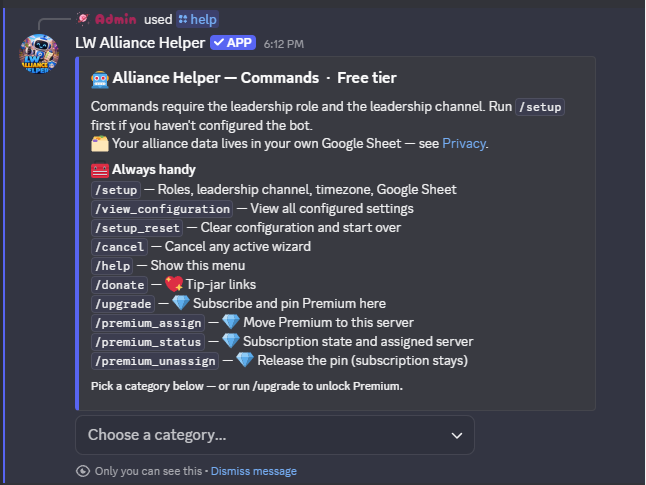

Commands
Every slash command provided by LW Alliance Helper, grouped by feature. Most commands require the configured leadership role and the leadership channel; /setup also accepts anyone with server Administrator permission. Start with /setup if the bot hasn't been configured yet. 💎 marks Premium-only features (unlock with /upgrade).
🗂️ Your alliance's data lives in your own Google Sheet. See Where Your Data Lives for details.

/help.⚙️ Setup Hub
One command opens the whole configuration surface. /setup shows your alliance's current configuration plus a button for every feature wizard: Core Setup, Events, Train, Birthdays, Desert Storm, Canyon Storm, Survey, Growth, Growth Breakdown, Shiny Tasks, and (💎 Premium) Member Sync. Three more buttons handle housekeeping: "View Configuration" prints every wizard's saved answers in one place, "📢 Release announcements: ON / OFF" toggles the leadership-channel embed the bot posts on each new major or minor release (on by default), and "Reset" clears your server's configuration so you can start over.
/setup: Open the setup hub. First-time use walks Core Setup (member role, leadership role, leadership channel, timezone, Google Sheet). After that, the hub lets you pick any feature to add, edit, or disable.
📣 Event Announcements
Schedule recurring events (Plague Marauder, Zombie Siege, or anything else) and post drafts to leadership for approval before announcing. A 5-minute warning fires automatically before kick-off. Open /events to see every action in one place.
/setup→ "📣 Events": Configure the four shared event settings: leadership draft channel, public announcement channel, daily draft time, and the 5-minute warning toggle./events: Event hub. Opens an embed showing the alliance's current event config plus a button grid for every action.- Read row: "📅 Today's events" opens the draft editor for the next event day. "📆 Upcoming events" shows configured event types plus their next firing dates. "📜 Event log" shows recent approved event posts (free tier: 7 days; 💎 Premium: 30 days).
- Write row: "➕ Create an event" opens a two-path wizard: pick from a curated preset list (Alliance Exercise variants, Zombie Siege, Glacieradon, Sky Predator) for a quick prefill, or define your own from scratch. "🗑️ Delete an event" removes an event from the schedule.
🚂 Train Schedule
Track who is assigned the alliance train each day and optionally generate a personalised ChatGPT prompt for that member's announcement blurb. Birthdays can be auto-added to the schedule.
/setup→ "🚂 Train": Configure the train tab, blurb generation, reminders, and the 💎 Premium DM-to-assignee body (with{name}placeholder)./train overview: View the schedule. Inline buttons let you "Add", "Update", "Generate Prompt", or "Clear" entries. Add and Update will offer to run the blurb wizard if blurb generation is enabled./train log [date]: Recent prompt log entries. Free tier sees the last 7 days; 💎 Premium has a 30-day window./train birthdays: Manually run the birthday check now and add upcoming birthdays to the train schedule. Useful if you just added a birthday and don't want to wait for the next nightly auto-run.
🎂 Birthdays
Read birthday data from your Google Sheet. The bot can post announcements in Discord and auto-add members to the train schedule on their birthday.
/setup→ "🎂 Birthdays": Configure birthday tracking, train integration, Discord announcements, and the 💎 Premium per-member DM body (with{name}placeholder)./birthdays: Show upcoming birthdays inside your lookahead window (default 14 days).
⚔️ Desert Storm
One command opens the whole Desert Storm workspace. /desertstorm shows your alliance's current storm configuration plus a button grid for every action your officers need each week. Setup includes an optional participation tracker where you define exactly what you want to log each week (text, yes/no, numeric, roster names, roster multi-select, plus 💎 single-select, multi-select, date, and derived count for Premium), with preset templates to skip the build step.
/setup→ "⚔️ Desert Storm": Configure teams, sheet tab, log channel, post channel, mail template, and (optional) participation tracking with custom questions. 💎 Premium also configures the sign-up channel, auto-schedule, and sign-up / roster / attendance sheet tabs./desertstorm: Event hub. Opens an embed with your alliance's current Desert Storm configuration plus a button for every action your officers take during the week:- "📣 Post sign-up poll" (💎): Posts the weekly sign-up embed in your configured sign-up channel. Members click "I'm in" to confirm they're showing up for this week's storm. You can also post it on a recurring auto-schedule (set during setup). Before posting, the bot shows a confirm + override step so you can swap each team's game-defined time slot for a single week without touching setup, and officers can vote on a member's behalf from the next button.
- "👁️ View sign-ups + set up teams" (💎): Opens an officer-only view showing every sign-up so far. From here you can vote on a member's behalf (useful when someone's promised to be there but hasn't clicked yet), then launch the roster builder to place sign-ups into starter and sub slots for each team, either by hand or with one-click Auto-fill that balances by closest power match.
- "📋 Record attendance" (💎): After the event, walk through this week's active roster and mark who actually showed up. Tracks no-shows over time so you can see patterns (e.g. a member who's missed three storms in a row).
- "📊 Fill out participation questions": After the event, answer the participation questions you defined in setup. The flow asks for the date first, then steps through each question (text, yes/no, numeric, roster names, or roster multi-select; Premium adds single-select, multi-select, date, and derived count). The summary auto-posts to your log channel, and per-member question types write to a separate Per-Member Log tab that powers the Trends Viewer.
- "🔔 Send DM reminder to roster" (💎): DMs every member on your alliance roster a participation reminder before the storm. The DM wording is customisable per storm during setup.
- "🧮 Manage strategy presets": Build and edit the strategy templates your roster builder will use, with zone assignments, slot counts per zone, and (Premium) per-team power floors. Supports 1, 2, or 3 fight phases as your alliance plays the event.
- "👤 Manage member rules": Add per-member overrides to your strategy presets. Assign specific members to specific zones, set power bands that exempt members from defaults, or pin people as starters or subs regardless of sign-up order.
- "📄 Generate mail": Walk the mail draft flow: Pick Team → Pick Time → Mail Template → Preview, then Post & Copy. The finished in-game mail posts to your configured post channel and you also get a copyable code block in leadership. (💎 Premium) When the rostered flow is wired up, "Approve & Post" also DMs each rostered member their personal assignment, using customisable templates per role: Starter, Paired Sub, and Pool Sub.
- "📜 View past participation logs": Look up a previous week's participation answers. Free tier shows the 4 most-recent entries; 💎 Premium has unlimited lookback.
- "🔍 View trends across events" (💎): Query the Per-Member Log tab across any window of past events. Pick a question, an operator (in words, not symbols), a threshold, a lookback, and a team filter; results render as a sorted table with a "📋 Copy as text" button so you can paste straight into in-game mail.
- "📜 View past rosters" (💎): Browse historical weekly rosters: who was on Team A vs Team B vs subs in any past week, with attendance data alongside each name.
- "⚙️ Open setup": Shortcut into the Desert Storm setup wizard so you can edit the configuration without leaving the hub.
/upgradeunlocks.
🏜️ Canyon Storm
Same shape as Desert Storm: every Canyon Storm action lives behind one hub command, with the same 11 buttons described above.
/setup→ "🏜️ Canyon Storm": Configure teams, sheet tab, log channel, post channel, mail template, and (optional) participation tracking with custom questions. 💎 Premium also configures the sign-up channel, auto-schedule, and sign-up / roster / attendance sheet tabs./canyonstorm: Event hub. Same 11-button layout as Desert Storm above. Every button behaves identically.
📋 Survey
Collect member statistics through a private Discord thread survey. Responses are saved directly to your Google Sheet and leadership is notified for each submission. Premium alliances can configure multiple named surveys (each with its own channel, intro, and reminder body) plus advanced question types (multi-select, date) and min/max bounds on numeric questions.
/setup→ "📋 Survey": Configure the default survey: questions, channels, sheet tabs, and intro message./survey overview: View your configured survey(s). 💎 Premium tier renders a list of every survey plus "Add", "Edit", and "Remove" buttons, the single surface for managing multiple surveys./survey post: Post (or repost) the answer button. Premium guilds with multiple surveys are prompted to pick which one./survey remind: Send a reminder right now, or set up a recurring schedule (daily / weekly). Free tier delivers reminders via channel post; 💎 Premium adds DM-via-Member-Roster delivery.
📈 Growth Tracking
Take periodic snapshots of your members' stats to track alliance growth over time. Each snapshot also classifies every member's percent change into a bucket (Increased, Steady, Low, None, or Decline) written to a separate Growth Breakdown sheet tab so you can see who is climbing and who is stalled at a glance.
/setup→ "📈 Growth": Configure source tab, metrics to track, and snapshot schedule./setup→ "📊 Growth Breakdown": 💎 Configure the breakdown auto-post channel, bucket filter, custom thresholds, and custom bucket labels. The breakdown computation ships on every tier; this wizard unlocks the customisation layer./growth overview: Show growth status with options to run a snapshot, view the most recent breakdown, or edit config./growth breakdown: Jump straight to the most-recent bucket breakdown (Increased / Steady / Low / None / Decline), rendered as an ephemeral embed grouped by metric and bucket.
🌟 Shiny Tasks
Daily auto-post listing every Last War server in your alliance's transfer range that has shiny tasks today. Free for every alliance. No more checking by hand and copy-pasting the list into your in-game mail.
/setup→ "🌟 Shiny Tasks": Configure the announcement channel, server range (your transfer-eligible window), post time, and message template.
💎 Member Sync
Premium-only. Writes every member's Discord ID and name to a sheet tab so DM-based features (birthday DMs, train DMs, storm reminders, scheduled survey reminders, auto-mention) can find members by name. Most alliances configure this once and let auto-sync keep it current.
/setup→ "👥 Member Sync": 💎 Configure the roster tab, optional role filter (member-role-only vs every non-bot), and whether to auto-resync when members join, leave, or change roles. The bot syncs into its own columns and refuses to overwrite any column your alliance already maintains alongside them, and the sync preview surfaces a presence column. Runs an initial sync at the end./members overview: 💎 See the roster source, last-sync time, and current state at a glance./members sync: 💎 Manually rebuild the roster sheet now. Useful after a bulk role change or if auto-sync is off.
📦 Data Portability
Move your alliance's bot config to a new Discord server, or snapshot it as a backup you can restore later. Your alliance's data always lives in your own Google Sheet; these commands carry the bot-side wizard answers (templates, channels, schedules, custom questions) alongside it. Free for every alliance.
/config overview: Show what this server has saved plus pointers into export and import./config export: Pick the categories you want to export (core setup, events, DS, CS, train, birthday, growth, surveys, shiny tasks, member roster) and the bot DMs you a JSON file with the saved config from those categories. Categories with no saved data don't appear in the picker./config import <file>: Attach an export JSON to apply it to this server. The bot walks a guided remap wizard for every channel and role referenced in the export (pick the new equivalent, keep the current value, or skip), then applies per category with a final summary embed naming what landed and what was skipped.
🔧 Utilities
/cancel: Cancel any active wizard or log session and reset wizard state./help: Show this command list inside Discord (always available, ephemeral). Category dropdown lets you browse details for each feature./donate: 💖 Show optional tip-jar links to support the bot's hosting./upgrade: 💎 Open Discord's subscription dialog and pin Premium to this server once checkout completes./premium overview: 💎 Show your subscription state and the server it's currently assigned to. On the free tier this doubles as an upsell summary./premium assign: 💎 Move your Premium subscription to this server. A subscription unlocks Premium in one server at a time; this is how you switch./premium unassign: 💎 Release the assignment without canceling the subscription. The server reverts to Free; the subscription is still yours to reassign elsewhere.